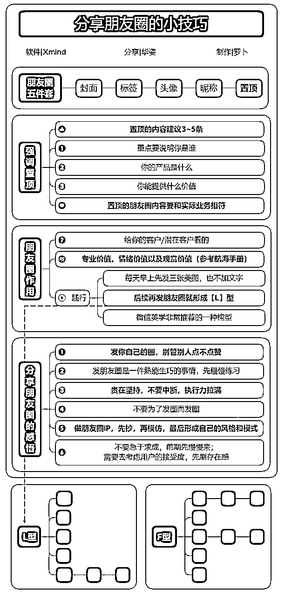
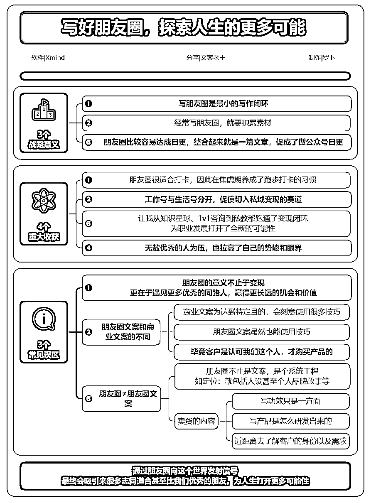
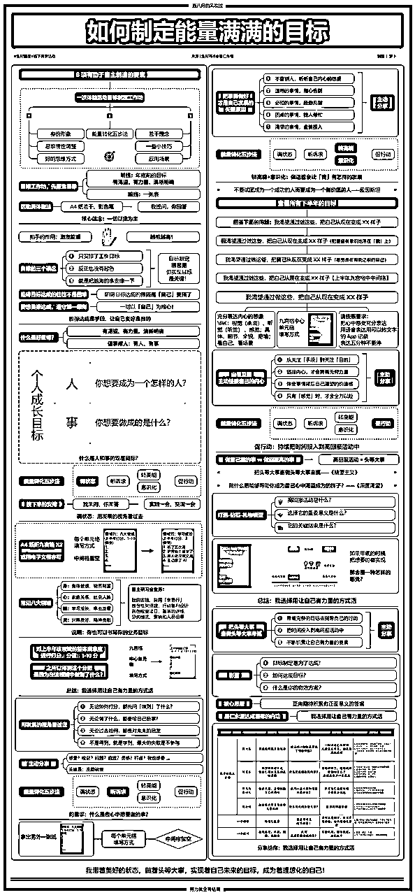

来源：https://dakhb269es.feishu.cn/docx/FgMcdIWkQokRkuxeFBNcrmrTnDc
大家好，我是罗卜。
一个在生财有术的旅途中不断探索和成长的普通人。
2023年4月18日，对我来说，是一个特别的日子，因为在那一天，我加入了生财有术，开始了一段全新的旅程。在这段旅程中，思维导图不仅是我学习的工具，更是我分享和教学的平台，如今，它已成为我培训和商业变现的核心。
今天，我想与大家分享我制作生财相关内容思维导图的初衷，以及这些导图给我带来的启发。每一张图背后，都有一个故事，都有我想表达的情感和理念。我希望通过分享这些故事，让大家感受到每一张思维导图的温度和价值。
在制作同城会的思维导图时，我会考虑以下几个核心点。只要这些导图中的任何一个点能够触动我，我认为这张图就具有了非凡的价值。而如果这些导图能够让阅读者有所收获，那么它们的价值就会倍增。
阅读注意：无需下载，即可高清阅读，建议用电脑阅读，点击任意一张思维导图，然后通过🔍放大缩小，调到阅读的最佳视角；手机端也可以点击任意图片，放大缩小等。
在我还未成为生财有术的一员时，我购买了小报童生财有术项目精选，希望能够从中找到自己的财富之路。但当我阅读完这些项目后，我感到了迷茫，就像一个在大海中迷失方向的航海者，不知道向谁求助，也不知道如何与这些项目的创造者们建立联系。
这种感觉，让我迫切地想要加入生财有术，寻找答案。于是，在418那天，通过好友的分享，我正式成为了生财有术的一员，开启了我的探索之旅。
购买后，我开始用思维导图的方式去阅读，将我感兴趣的帖子转化为视觉化的导图，帮助自己更好地梳理和理解项目的核心要点。
在最初阅读这些帖子的时候，我并没有想过将这些思维导图转化为竖屏格式，也没有进一步细化排版和配色，它们看起来粗糙，内容上也没有太多精简。这些导图对我来说，是个人的学习记录，我很少分享它们，因为我认为它们难以让其他人理解。
但随着时间的推移，我开始意识到，这些导图不仅是我个人成长的见证，也是我与他人连接的桥梁。我开始尝试将这些导图变得更加精致，更加易于理解，希望能够通过分享，让更多人受益。
关键词：#生财有术#项目精选#思维导图#个人成长#知识分享
有幸与胖大魔和生财研学社的小伙伴们共同开启了《亦仁益语》的共读之旅。我们精选了书中的21章，每一天，我们通过阅读、理解，并结合个人或身边人的案例，在社群中与圈友们分享。这些故事，如同一盏盏明灯，照亮了我前行的道路。
起初，我只是共读的一员，沉浸在书海中，享受着每一次的思考与交流。然而，随着时间的推移，我注意到每次分享的内容虽然有用飞书文档整理，但总觉得缺少了点什么。于是，我萌生了一个想法：要不要试试用思维导图来整理这些内容，再分享给大家？
我这样做的初衷很简单：很多小伙伴可能因为忙碌而来不及查看这些分享内容，或者对内容的理解还不够透彻。因此，我决定用思维导图来整理这些内容，然后分享在群里。这些导图不仅获得了大家的喜爱，还被广泛传播，让更多人得以看见。
就这样，我坚持分享了差不多一个月的时间。我的努力得到了生财研学社小伙伴们的认可，他们甚至邀请我做内部分享，帮助大家提升思维导图的制作技巧。这是一次自我学习的过程，也是一次传播分享的旅程，更是一次破圈利他的实践。
关键词：整理分享，自我学习，传播分享，破圈利他


在生财有术的航海之旅中，每个环节都是一次新的探索，一次知识的积累。航海启航和航海加油站，这两个环节如同海上的灯塔，照亮了所有航海社群的方向，让所有参与航海的人都能看见那些宝贵的分享。在5月的航海中，我注意到思维导图的分享并不如预期那样广泛，这让我意识到，在8月的航海中，这是一个可以被更多人看见的机会。
因此，我决定在8月的航海中，特别关注航海启航和航海加油站的思维导图制作。这些导图，不仅能够被所有参与航海的人看见，更是一个展示自己、被看见的机会。而对于高手领航的分享，这类内容通常仅限于参与这个航海的圈友可以看见，这让我更加珍惜这样的机会。
在制作这些思维导图时，我也特别注意了一些方法和技巧。制作完成后，我会认真核查是否有措辞不当、错误的言语及嘉宾名字是否有误的地方，并及时更正。这是对嘉宾的尊重，也是对知识的负责。
如果有机会添加嘉宾，我会备注添加原因，表达我的诚意和请求：“某某教练，您好，我是XX，听完您的分享，我制作了一份思维导图，想请您帮忙检测是否有误。”即使添加好友时不能有这么多文字，我也会尽量表达出我的意思。添加微信后再补充说明，然后把制作好的思维导图分享给对方，这是一次真诚利他的行为，也是一次借力破圈的机会。
关键点：真诚利他，被看见，借力破圈


在去年8月，我们集结了一群志同道合的伙伴，组成了一个充满活力的团队。每个人都投身于航海的思维导图制作与分享，这不仅是一次知识的传递，更是一次心灵的交流。续航的制作，因此变得更加有意义，它不仅记录了我的努力，也见证了我的成长。
恰好我报名的航海中，有续航。这次，大部分的分享都来自有自己对朋友圈的案例分享，这次于我而言不仅是一个链接圈友的绝佳机会，更是一个学习和自我突破的平台。
我自然不会错过这样的机遇，因为在这里，我可以学习到更多关于朋友圈运营的方法和技巧。
制作近20期的思维导图，每一期都是一次新的探索。每个人都从自己所从事的项目和案例出发，分享自己独到的方法和技巧。每个人都有独特且深刻的见解，这些分享都是宝贵的财富，值得被记录和反复阅读学习。
也因此，我链接到了不少在朋友圈变现方面表现出色的圈友。更多时候，这些导图也帮助那些未能及时参加分享和提问的圈友们，让他们有机会再次回顾和分析内容。
关键点：持续制作，真诚利他，自我突破。





去年我满怀期待地参加了生财有术的深圳年会。作为思维导图制作的爱好者及传播者，我有必要把年会的内容整理成思维导图，这不仅是对我的认可，也是一份沉甸甸的责任。我愿意投入时间，去梳理、去总结那些充满智慧的分享。
在年会上，我见到了许多生财的大佬，他们的见解和经验让我受益匪浅。作为一直在输出思维导图的我，自然不会错过这次机会，我整理了这次的分享，这不仅是对自己学习的回顾，也是帮助参与的小伙伴做课代表，更是为未能参加的小伙伴提供内容整理分享。
这张图，被鱼丸拿去分享到了朋友圈，这是对我工作的一种肯定，也是对生财有术精神的一种传播。
关键点：深圳年会，深圳课代表，被分享
在这个信息爆炸的时代，能够接触到真正有价值的分享是一种难得的幸运。尽管我未能亲自出席，但作为线上志愿者，我被赋予了一项光荣的任务——整理线下嘉宾的分享。这个对我来说，不仅仅是一种责任，更是一种荣耀。我愿意投入时间和精力，去梳理、去提炼那些智慧的精华，即使是在线上，也能感受到那份知识传递的温度。
通过现场圈友的辛勤工作，将那些精彩的瞬间转化为文字稿。这次，我们还特别组建了一支制作思维导图的团队，我有幸参与其中，为两场分享的内容进行了整理。这不仅是一次学习的过程，更是一次自我提升的旅程。学习大佬们的分享内容，对于我们这些渴望成长的人来说，是一次难得的机会。这些内容，作为航海家的专属福利，非航海家成员是无法听到的。
因此，在整理完成后，这些图也没有对外分享，这是我们对航海家成员的一种尊重和保护。
这次，我们首次将这些思维导图分享出来，这不仅是对知识的传播，更是对航海家精神的一种传承。我们相信，通过这样的分享，我们能够助人助己，共同成长。
关键点：航海家分享，组队制作，助人助己
在这里，将开启一段非凡的旅程。【风向标·赚钱机会挖掘训练营】是专为加入的圈友准备的，它不仅是一次学习的机会，更是一次财富的发现之旅。在这里，将一起揭开风向标的神秘面纱，学习如何捕捉那些稍纵即逝的赚钱机会。
每天的分享都是精心准备的，内容深刻而实用。从风向标的定义开始，逐步深入到如何寻找风向标，最终教会大家如何撰写风向标，以获得宝贵的术值。这些内容，对于每一个渴望在生财有术中成长的圈友来说，都是不可或缺的知识财富。
通过这次训练营，不仅能够学习到如何看风向标，更能够学会如何挖掘风向标中的赚钱机会。这些技能，将伴随你们在生财有术的道路上，乘风破浪，勇往直前。
关键点：风向标，发现新机会，挖掘赚钱项目
第8期加入生财有术的圈友们，你们的到来如同春风拂面，带来了新的活力和希望。在这里，官方将带领大家快速而深入地了解生财有术的每一个角落，让你们能够更加得心应手地运用这个平台，开启自己的财富之旅。
我有幸参与其中，感受到了这个融入营的温暖和力量，也因此制作了这张思维导图。这张图不仅是对融入营内容的总结，也是对新人们的一种指引。通过这张图，新人们能够不急于求成，而是先花时间去深入了解生财有术，了解每个板块的特点，以及自己的真实需求。
在这个过程中，鼓励以老带新，让经验丰富的老圈友们成为新人们的引路人。这是一种传承，也是一种共同成长的机会。我相信，通过学习生财有术，尝试不同的方法，新人们将能够找到适合自己的路径，实现自己的目标。
关键词：生财新人，以老带新，学习生财尝试
在航海家的社群里，每个周四晚上都像是一次知识的盛宴，大咖们纷纷登场，带来他们的故事和智慧。我会根据自己的兴趣选择参加，每一次的分享都是一次心灵的触动，一次视野的拓展。我将这些宝贵的内容制作成思维导图，不仅是为了记录，更是为了分享——让那些未能亲临现场的航海家们，也能通过这些图感受到现场的温度，汲取知识的力量。
每期的分享都邀请了在航海领域有所成就的航海家或嘉宾，他们的故事和经验，如同海上的灯塔，为我们指明方向。同时，我们还会结合各地的特色，开展同城航海家周末游学等活动，让航海家的精神在每个角落生根发芽。
为了让新加入的航海家们快速融入我们的大家庭，我特别制作了一张图，它不仅展示了同城社群的各个板块，还指引着新成员们可以如何参与其中。这张图，是我们对新成员的欢迎，也是我们对未来的期待。
关键点：航海家，各领域大佬分享，产生更多链接。

在生财有术的世界里，不仅是知识的探索者，更是彼此生活中的伙伴。在官方还未搭建同城群的时候，许多热心的圈友已经像星星之火一样，自发组建了同城社群，他们在官方聚会板块发起同城聚会，让同城的圈友们能够找到组织，感受到同城的温暖。
这张图，是我们为刚加入的圈友准备的一份特别的礼物。它不仅是一个指南，更是一份邀请函，让新加入的圈友们能够快速了解同城社群的各个板块，知道自己加入后可以做些什么。我们希望，通过这张图，新圈友们能够迅速融入这个大家庭，感受到同城社群的热情和活力。
在设计理念中，特别加入了一张具有同城特色的地标图片，这是为了让同城圈友们在看到熟悉的画面时，能够感受到一种归属感，把大家的心紧紧地聚在一起。我们相信，通过“线下见一面”的实践，我们不仅能够加深彼此的了解，更能够建立起深厚的友谊和合作。
关键点：欢迎同城圈友加入，同城聚会，圈友链接。
在这个充满活力的生财有术社区中，易仁永橙老师以其智慧的光芒，照亮了我们前行的道路。全国各地的线下共学分享，如同一场场知识的盛宴，让我们在几个小时的学习与互动中，不仅收获了满满的能量，更激发了我们实现目标的决心和动力。
这次线下活动，是一次心灵的触动，是一次智慧的碰撞。每个参与的小伙伴，都如同被点燃的火花，激情和动力在心中熊熊燃烧。我们不仅学习了知识，更在互动中找到了共鸣，感受到了团队的力量。
为了将这些宝贵的时刻永久保存，我制作了一张思维导图，它不仅是对线下共学内容的总结，更是对未来参与者的一份指南。通过这张图，未来的圈友们可以清晰地了解每一场线下共学到底分享了什么，让每一次的学习都成为他们实现目标的助力。
关键点：#能量满满#线下共学#目标制定

在这个充满机遇的生财有术社区中，我们如同探险者，寻找着知识的宝藏。这几张图经常被更新表，不仅仅是信息的集合，它们是我们理解生财知识星球和索引站组织框架的指南针。
每一次更新，都是为了让这些导图更加精准，更加贴近我们的需求，让我们能够一目了然地知道自己需要关注哪些板块，以及这些板块的具体位。
同时，这些导图也为我们揭示了如何获得术值、龙珠碎片和龙珠的秘密。它们不仅告诉我们有哪些方法可以获得这些宝贵的资源，还指导我们在生财有术中应该做哪些事情。这些内容，如同金子般珍贵，值得我们去深入学习和实践。
关键词：#术值及龙珠获取#玩转生财有术#知识星球
我原本以为，制作一张思维导图，分享一些思考的果实，不过是日常的小事。然而，命运却有着它自己的安排，这张思维导图被官方选中，在航海家的线下聚会中被亦仁点名分享，成为了聚会中的一抹亮色。
这不仅是对我个人的肯定，更是对思维导图这一工具价值的认可。就像上一次陈雪在千人大会上展示分享的思维导图一样，这些图表往往能带来意想不到的惊喜。
这些内容，如同珍贵的宝藏，值得我们去挖掘、去学习。这次，我组织团队整理资料，顺便制作了分享的思维导图。因为我相信，优质的内容都值得用思维导图来整理，它们能够帮助我们更好地理解、记忆和传播知识。
关键词：#航海家见面#被惊喜#值得去制作

在过去的两个月里，我们暂停了脚步，但这并不意味着我们停止了思考。相反，这段时间给了我机会去反思、去规划，如何让我们的聚会更加精彩，更加贴近大家的需求。
每一次聚会都是一次新的开始，每一次交流都是一次心灵的碰撞。因此，我特别整理了体育&娱乐委员以及学习委员的基本要求和注意事项，将这些宝贵的规则以图表的形式呈现，让它们像春天的种子一样，被重复播种，生根发芽。
我希望，这些导图能够成为大家手中的指南针，引导每一位圈友在聚会的海洋中航行，避免迷茫，享受每一次的相聚。同时，我加入了二维码，让那些渴望发起自己线下组局的圈友，能够一键直达聚会板块，轻松开启他们的聚会之旅。
关键词：线下聚会，聚会升级，委员
他以敏锐的洞察力和深邃的理解力，被我们亲切地称为“标王”——老彭。老彭向我们展示了他对风向标的独到理解，以及如何精准地寻找并分享这些关键信息。
他的话语如同灯塔，照亮了我们前行的道路，让我们在复杂的市场环境中，能够把握方向，乘风破浪。老彭的分享不仅仅是一场知识的传递，更是一次心灵的触动。他用他的热情和智慧，点燃了我们对探索未知的渴望，激发了我们对挖掘风向标的热情。
每一句话，每一个案例，都像是精心雕琢的宝石，闪耀着智慧的光芒。老彭的分享，不仅让我们对风向标有了更深的认识，更教会了我们如何将这些知识转化为行动，去影响和帮助更多的人。
#风向标#市场洞察#知识分享
想要阅读更多思维导图可以移步查看往期的分享：
在生财输出1000张思维导图后，得出10倍增长的6个心得
罗卜与19位伙伴:共创81张思维导图的成果展示
生财思维课图谱:37张竖屏思维导图，解锁生财新思维
新老圈友不容错过的16张竖屏思维导图，让你在生财更上一层楼
加入生财1年,我凭竖屏思维导图逆袭,都做了哪些?
公开制作竖屏思维导图3个月后，应邀开办训练营
用竖屏导图深度航海:108份导图回顾8月航海之旅
以上，就是我在加入生财有术制作每一张思维导图的一些思考，欢迎与我交流分享，也期待与各位老板建立新的链接。
祝各位老板发财💰💰💰